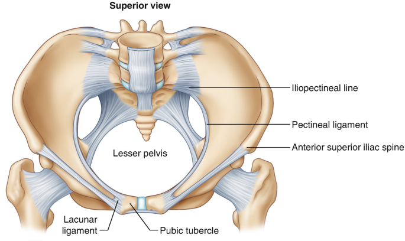

Ligaments of the Pelvis!
The lower limbs are the pillars of the human body. They literally enable us to “stand tall” from day to day. Many articles have been written concerning the musculature and skeletal structures of the lower limbs, as well as the neurovascular supply to the same. However, it should not be taken for granted that a vast number of ligaments throughout the lower limbs also share the burden of holding the bony structures together.
